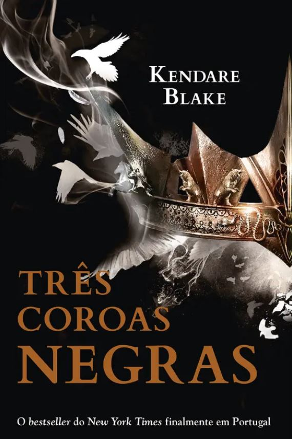

Escolheste mais respostas a)!
Em "Três Coroas Negras" de Kendare Blake, mergulhamos num mundo de intriga e magia, no qual três rainhas, Katharine, Mirabella e Arsinoe, disputam pela coroa de Fennbirn. Na noite em que as irmãs completam 16 anos, a batalha começa. E a rainha que sobreviver, conquistará a coroa. Cada uma possui habilidades únicas, mas lutam não apenas entre si, senão também contra as forças que desejam manipular os seus destinos. Nesta trama repleta de traições, alianças instáveis e mistérios antigos, as rainhas devem enfrentar desafios mortais para garantir a sua sobrevivência e conquistar o trono. Com uma narrativa envolvente e personagens complexos, este livro é uma jornada épica de ambição, traição e destino. Na hora de reinar, apenas uma restará.
 Compra em Português PT Compra em Inglês